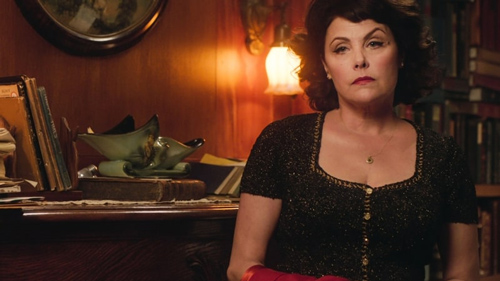

Audrey Horne finally returns, as the series gets more cryptic – and more complicated – by the hour.

For the second time this season, Twin Peaks has dropped an A-bomb.
Finally, Audrey Horne – and Sherilyn Fenn, the actor who made her a small-screen icon – makes her long-awaited return. And per usual for this show, creators David Lynch and Mark Frost dropped her into the revival in a way few of us could have predicted. Instead of giving her a grand entrance befitting the comeback of one of the original series' breakout characters, boom, there she was, revealed without fanfare in a smash cut from the previous scene.
That sequence, by the way, didn't involve her former idol and love interest Dale Cooper; he was seen only briefly this week, still in Dougie Jones mode, playing catch with his kid by letting the boy bean him with the ball. Nor did it feature her father Ben, or his ne'er-do-well grandson, whose parentage we learn nothing more about. It was a comic-relief interlude starring, of all people, Dr. Jacoby and Nadine Hurley. It was the least relevant lead-in to Audrey's first (re)appearance that the series could possibly have come up with. And coupled with her delayed arrival fully two-thirds into Twin Peaks 3.0's run, it paradoxically made her return all the more memorable.
As for her big scene itself … well, we're a long way from the bobby-soxer femme fatale who slow-danced her way into our hearts back in the day. Audrey is now unhappily married to a paper-pusher named Charlie, played by a terrifically taciturn Clark Middleton. Less to his outrage than to his exhaustion, she furiously insists he help her track down a missing man. No, not her son Richard — some dude named Billy, with whom she's having an open affair. And who may or may not be the missing man some guy ran into the Double R looking for during the closing credits a few weeks ago. And who also may or may not be the farmer whose truck Richard was driving during the hit-and-run and who disappeared before talking to Deputy Andy about the incident.
Got all that? Because there's more, involving Audrey's rival who was reportedly the last person to see Billy, and the guy who stole Billy's truck, and some acquaintance Audrey threatens to send after her nebbish husband if he doesn't comply with her wishes, and – sorry, what's that? You don't know who these people are? Neither do we! Neither does anyone! Our Ms. Horne and her husband, however, talk about them like they're main characters; even Billy's identity is guesswork at best. It makes for wonderfully disorienting dialogue, and a grand entrance for one of the show's heroines despite itself.
It's also a reminder that so much of the reboot has involved catching up with old favorites who've lived for two and a half decades since we last saw them, building new lives in the process. The effort required to connect the dots between who they were then, who they are now and the many new faces that surround them is Twin Peaks' equivalent of jumping into a daytime soap 25 years after you last watched it, desperately trying to piece together everything's that happened since. A scene like Audrey's lament is simply a more extreme form of what Lynch and Frost have been doing for a dozen episodes and counting.
But this technique serves a deeper purpose, revealed when you compare it to the conversation at the road house that ends the episode. Like several other visits to the Bang Bang Bar before it, this one introduces us to women we've never seen before, Abbie and Natalie, talking about the troubled romantic and family life of a friend. Suddenly, a dude named Trick bursts in to join them, breathlessly explaining that "some fucking ass-eater" nearly ran him off the road on his way over. Richard, perhaps? Again, who knows?
And for the purposes of this scene, who cares? The idea behind these climactic "scenes from a small town" conversations is the same one animating Audrey and Charlie's argument. This idea is that everyone we meet has a story that sprawls out unseen in all directions, and at any moment we're only aware of a tiny fraction of it.
We see this play out time and time again in this episode, even when we do know who the hell people are talking about. It's in a touching little aside in which Harry Dean Stanton's Carl Rodd waives a month's rent for a quiet, limping man who's been selling his own blood to make ends meet. It's there when Chantal and Hutch, the evil Cooper's minions, execute the warden of the prison he escaped from and callously drive off for burgers at Wendy's as the victims's young son runs out the door, screaming "Daddy!"
And on a lighter note, we see it when Albert pops into Gordon's room for an update, and discovers the older man making time with a glamorous young Frenchwoman he seems to have only just met. (Lynch has turned Cole into quite the ladies' man.) Untold stories are implicit in the mysterious connection Diane has to the Dark Cooper, and in the secret history of the Blue Rose paranormal-investigation unit that the FBI veterans reveal to their young colleague Tammy (not to mention us).
Most upsettingly, we see it in the sad life of Sarah Palmer. As played by Grace Zabriskie, who is still utterly mesmerizing in the role, the character looks and acts like her daughter Laura's murder incinerated her spirit and sanity for good. Staggering through the supermarket to pick up vodka and cigarettes, she has a panic attack at the checkout line, triggered by new items behind the counter. Her dialogue, reminiscent of the screaming driver from last week's episode, is a crescendo of terror. "The room seems different. And men are coming. I am trying to tell you that you have to watch out! Things can happen! Something happened to me! I don't feel good. I don't feel good!" By the time Deputy Hawk checks in on Sarah later that day, she's no longer agitated, but her flat affect is even harder to behold.
We've all got stories, yes. But in Twin Peaks, as in life, some of those stories end long before the lives of their main characters, leaving a lifetime of blank pages to turn, one after another, before the book closes.